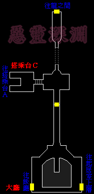
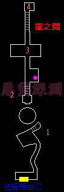
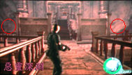
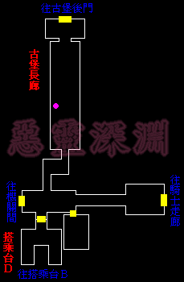
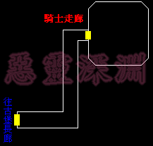
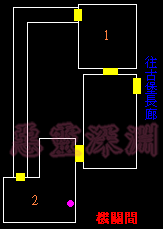
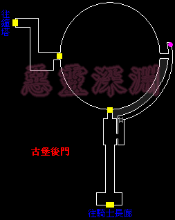
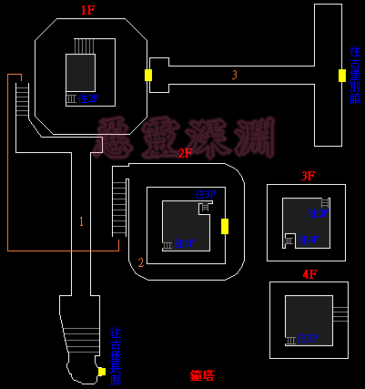
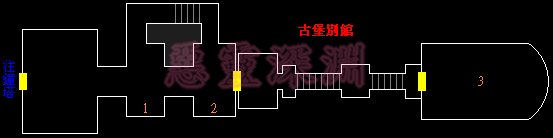
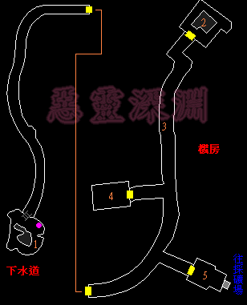

|
惡靈古堡～惡靈古堡４----地圖攻略～4-1
|
|
攻略內容以Normal為主，地圖上的紫色圓點●表示高價寶物的位置 ，標綠色的道具則是過關必須的重要道具。
 兩人會合後應該繼續往搭乘台Ｃ的方向前進，但是如果想要拿高價寶物和麥格農手槍的話，就回頭經過飯廳回到城牆上。
飯廳附近又重新佈置了邪教徒。編號2的房間可以打開通往城牆上鎖住的門，房內也有一些道具，但是有個箱子裡面是蛇，要注意 。城牆上噴水池旁邊鎖住的房間，只要和Ashley合作就可以讓她進去打開，裡面有高價寶物金の装飾の入った香水瓶（以金子作裝 飾的香水瓶），還有珍貴的麥格農手槍。 回到開始的大廳繼續前進，在往龍之間時Leon會把Ashley留在搭乘台Ｃ附近，這裡很安全，可以放心。
 一進入龍之間就感覺到不尋常的氣氛，最好不要貿然前進，先往左側靠，用狙擊槍將位於編號2位置乘坐在噴火龍石像後面的邪教 徒，再往右靠，狙擊編號1位置的邪教徒 。（擊落噴火龍的方法有二，一是打倒噴火龍上的邪教徒，二是打斷噴火龍上方的黃色鐵 鍊。） 擊倒這兩個噴火龍時，在途中都分別會出現一個寶箱，其中一個裡面是高價寶物邪悪なる宝玉（邪惡的寶玉）。當玩家繼續前進到 編號3的位置，在編號4的地方會升起第三隻噴火龍，而且從後面也有邪教徒出現攻擊， 先躲到牆後面以免被火噴到，然後再慢慢解 決這批邪教徒。
 想要從正面遠處攻擊第三隻噴火龍上的邪教徒時，會發現邪教徒被擋住無法攻擊，因此必須從側面來。觀察編號3左右兩邊的兩面 牆，在最邊邊都留有一些空隙（請看圖中紅色圈圈處），而且當玩家移動到某一邊時，噴火龍就會朝這個方向移動且噴火，利用這 個特性，先移動到某面牆後引誘噴火龍往這裡噴火，趁它開始噴火之時，立刻移動到另一邊牆的空隙來狙擊。（選擇直接打斷噴火 龍的鐵鍊，只要遠離到火噴不到的地方，瞄準噴火龍上方黃色鐵鍊將之打斷。） 將這個噴火龍打倒之後，就會出現階梯，讓玩家去拿寶箱中的獅子的物件。 和Ashley會合，從搭乘台Ｃ搭車移動到謁見大廳的搭乘台Ａ。
回到大廳，將山羊的物件、蛇的物件、獅子的物件裝上，即可打開中央的通道。在往搭乘台Ｂ之前，旁邊往上的樓梯最好也跑一趟 ，上面有道具，還有隱藏在畫後面的金錢。
 搭乘台Ｄ的畫作後方有金錢。來到古堡長廊可以先去附近的小房間找武器商人整理裝備。 購物指南（new）：
長廊的石像上有一些寶石，其中有個高價寶石仮面の宝石＿緑（面具的寶石＿綠），底部的門卻被鐵欄杆擋住了。為了要順利前 進，必須拿到兩個聖杯（easy模式只需一個），在往騎士走廊的門前有file樣本奪回完了，前進騎士走廊。
 （eazy模式略過此段）在騎士走廊上有一排鎧甲騎士，把Ashley留在這裡，前進時要記得按複合按鍵來躲避騎士的攻擊。到內部房間 後，房間中央有重要道具王的聖杯，拿起來後，房間門被關上，四周出現了三個鎧甲騎士，這是無法逃避的戰鬥，最好先繞幾圈引 誘三個騎士在同一個方向以免被圍攻，攻擊它們的頭部，受到一定攻擊後，就會從頭部跑出寄生體，可以先讓三個的寄生體都出現 後再一次用閃光彈解決。第一批解決後還會有第二批，第二批結束就可以離開。
 回到古堡長廊後往機關間，這裡地上有四個按鈕，還有兩個石像，惡靈的玩家都知道該怎麼做吧，推動兩個石像到按鈕上，另外兩 個按鈕就由Leon和Ashley來按，就可以打開往編號1的門。先別急著衝進去，在門口觀望一下，發現天花板上似乎有陷阱，而且還有 四個紅燈，若先在門口將這四個紅燈擊破的話，待會就會輕鬆多了。
進入房間後遇到Salazar，房間機關啟動，天花板往下壓來，只要擊破四個紅燈就會停了，也可以直接離開，房間角落則有一個手槍 彈。接著經過一個長廊，要抵達編號2房間時，Ashley被機關隔了起來，而且後面還有兩個邪教徒開著帶有武器的車逼近，最好用來 福槍將兩個邪教徒打倒，缺少子彈的話在隔開的門邊有，不然就使用散彈槍。將兩個邪教徒打倒後隔門就會打開，趕緊帶Ashley離 開。編號2房間裡有高價寶物豪華な装飾のチェス盤（豪華裝飾的西洋棋盤），還有重要道具后的聖杯。
回到古堡長廊，這時長廊上已佈滿許多邪教徒，將他們打倒後在底部王與后的石像手上放上王的聖杯、后的聖杯，打開往古堡後門 的門。
 古堡後門前的走廊有一些道具可拿，不過要小心有一隻蛇。在接近底部的窗口可以攀到外面的露台上，從露台爬上梯子到後門的上 方，底部有高價寶物盲目の蝶のランプ（盲眼的蝴蝶油燈），從這裡也可直接下降到後門。抵達後門時Ashley被蒼蠅人抓走，還出 現一批蒼蠅人來攻擊，只要躲到露台上就可以慢慢安全地將牠們打倒。
後門的中央上方有個蒼蠅人的巢，是能被攻破的，不過如果彈藥不足就不要理會，攻破後會掉下一堆グリーンアイ（綠之眼）、レ ッドアイ（紅之眼）、ブルーアイ（藍之眼）。 對於想要打落巢拿取寶物，但不想對付那些蒼蠅人的玩家，可以在觸發劇情前，從 露台上將巢打落，然後觸發劇情後趕緊去拾取寶物。 打開牆邊的把手試圖放下城橋，卻發現鐵鍊卡住了，瞄準兩個連接鐵鍊的鐵板，打下後橋就放下了。
門後有武器商人，待會需要面對比較多敵人，先整理一下裝備。 購物指南（new）：
 來到編號1的橋上，得小心邪教徒以及對面城牆上的投火石攻擊，為了要追上Salazar和Ashley，因此目的是古堡別館。easy模式可以直 接操作把手前往古堡別館，沒辦法進入鐘塔；其他模式由於現在與古堡別館之間沒有橋可以通行，所以要進入鐘塔四樓啟動機關， 讓編號1的橋移到編號3的位置。要進入鐘塔只能從二樓的門進去，二樓解決一批邪教徒後，可以在編號2的地方狙擊對面城牆上投 火石的邪教徒。從二樓進入鐘塔後，先往上看，在由各個齒輪組成的結構中，有三塊淡褐色的木塊阻檔齒輪的運行，如果在這裡射 不到就往上爬的時候找適當的位置。清掉三塊障礙。
打開位於四樓的開關啟動齒輪，這時通往古堡別館的路就完成了，可以從一樓的門過去，小心途中有邪教徒闖入。四樓有份file儀式 的準備。 到編號3的橋上時，有三個邪教徒，但是前進要過橋時，另一批邪教徒出現，而且是前後夾擊，因為前面的首領持有火箭砲，建議 先回頭打後方的兩個邪教徒。邪教徒頭頭身上有高價寶物金の腕輪（金的手環）。橋邊有打字機，先存檔一下。
 進入古堡別館先別急著往前衝，前方有兩個邪教徒鎮守，後面則有兩個鐵爪男在晃蕩，最好先用來福槍快速解決兩個邪教徒，並逃 離原地，在編號1、2處有鐘可以利用來引誘鐵爪男，小心上方通道中還有一個邪教徒，而且到最上層時會出現三個邪教徒攻擊。這 個房間很長，所以鐵爪男如果距離很遠，常常會追擊聲音到一半就失去方向，善用這點，拉開距離再攻擊。戰鬥結束後兩邊的門就 會打開。 接著直衝編號3的房間，終於見到Ashley，不過卻掉入陷阱之中。請按照指示按複合按鍵。
 從陷阱跌落到下水道編號1，這裡有武器商人。 購物指南（new）：
半自動散彈槍可說是遊戲中實用性最佳的散彈槍，建議購買。 補足身上的恢復藥。 附近有些小道具還有高價寶物くぼみのある王冠（有坑洞的王冠）。經過下水道到達機房，特別小心死刑蟲的攻擊，必須隨時注意 按複合按鍵來迴避，為了恢復電梯電源，前往編號2最裡面打開開關，電源就會重啟，去調查出口的門，要經過一段時間後門才會 開啟，可是死刑蟲卻追來了，死刑蟲速度很快，他的弱點是「冰」，在這個房間中有個紅色的鋼瓶，在死刑蟲接近時將鋼瓶推倒來 冰凍他，可以拖延一段時間，趁這個機會使用左輪來攻擊，子彈不夠也可使用機關槍。等門打開後，利用編號3、4、5處的鋼瓶反 覆進行攻擊，死刑蟲死後會掉落高價寶物王冠の宝石＿緑（王冠的寶石＿綠），電梯也到達了。如果打不過，就拖延時間，等四分 鐘後電梯一到即可逃跑。 搭上電梯後，本章節結束。
疑難解答
邪悪なる宝玉（邪惡的寶玉） 12000ptas 仮面の宝石＿緑（面具的寶石＿綠） 3000ptas 豪華な装飾のチェス盤（豪華裝飾的西洋棋盤） 13000ptas 盲目の蝶のランプ（盲眼的蝴蝶油燈） 4500ptas グリーンアイ（綠之眼） 1000ptas レッドアイ（紅之眼） 1500ptas ブルーアイ（藍之眼） 3000ptas 金の腕輪（金的手環） 8500ptas くぼみのある王冠（有坑洞的王冠） 9000ptas 王冠の宝石＿緑（王冠的寶石＿綠） 11000ptas 組合──緑光蝶のランプ（綠光蝶的油燈） 6500ptas 赤光蝶のランプ（紅光蝶的油燈） 7000ptas 青光蝶のランプ（藍光蝶的油燈） 8500ptas 妖光蝶のランプ＿緑＋赤（妖光蝶的油燈＿綠＋紅） 11000ptas 妖光蝶のランプ＿緑＋青（妖光蝶的油燈＿綠＋藍） 13000ptas 妖光蝶のランプ＿青＋赤（妖光蝶的油燈＿藍＋紅） 15000ptas 輝く幻光蝶のランプ（閃耀的幻光蝶油燈） 32000ptas 宝石の入った王冠（鑲上寶石的王冠） 25000ptas 王冠的配備還沒齊全，千萬別先賣了，組裝完成後的價錢可是相當驚人！ 未經許可禁止轉載連結 |
|||||||||||||||||||||||||||||||||||||||||||||||||||||||||||||||||||||||||||||||||||||||||||||||||||||
惡靈深淵Biohazard Abyss http://98.to/coolbio